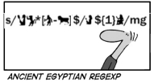

Topics
Jmeter
The Apache JMeterT desktop application is open source software, a 100% pure Java application designed to load test functional behavior and measure performance. Read more...
SSH
Secure Shell (SSH) is a cryptographic network protocol for a number of secure network services between two networked computers that it connects via a secure channel over an insecure network: a server and a client. Read more ..

Regular Expression
Regular Expression provides a concise and flexible means to "match" (specify and recognize) strings of text, such as particular characters, words, or patterns of characters. Read more ..
BeanShell 2.0
BeanShell dynamically executes standard Java syntax and extends it with common scripting conveniences such as loose types, commands, and method closures like those in Perl and JavaScript. Read more ..
Cron daemon in UNIX systems
Cron is the time-based job scheduler in Unix-like computer operating systems. Cron enables users to schedule jobs (commands or shell scripts) to run periodically at certain times or dates. Read more ..
XPath
XPath, the XML Path Language, is a query language for selecting nodes from an XML document. In addition, XPath may be used to compute values (e.g., strings, numbers, or Boolean values) from the content of an XML document. Read more ..